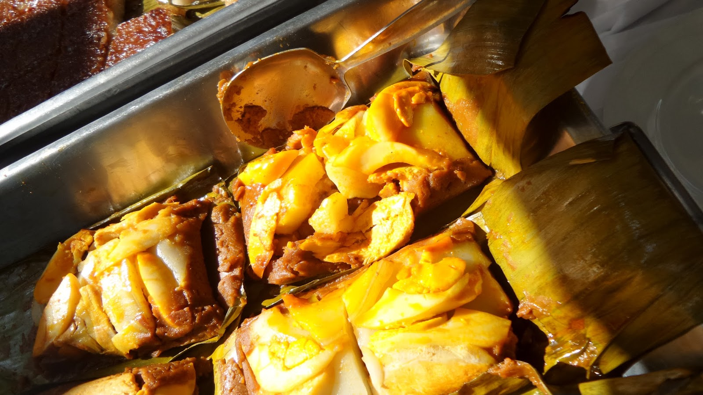
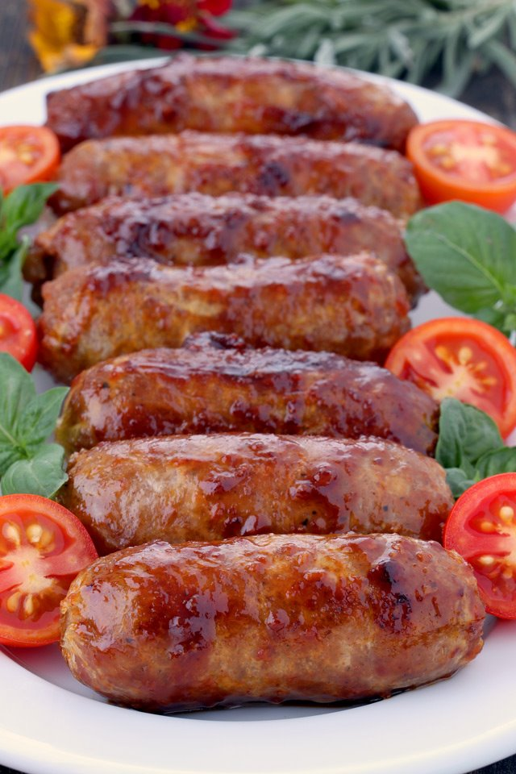
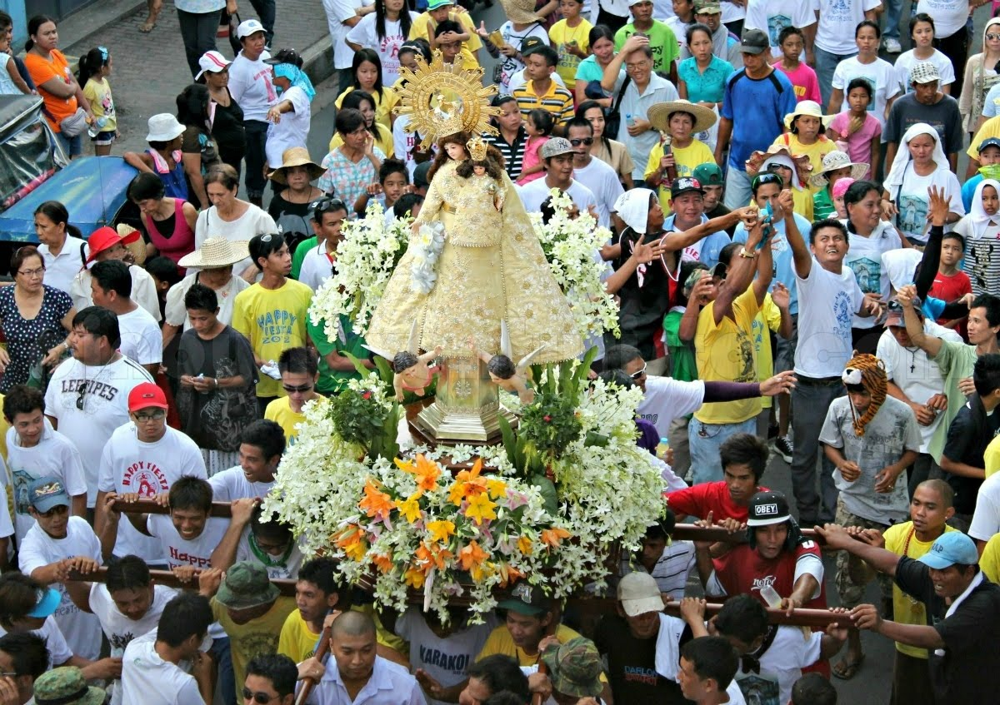
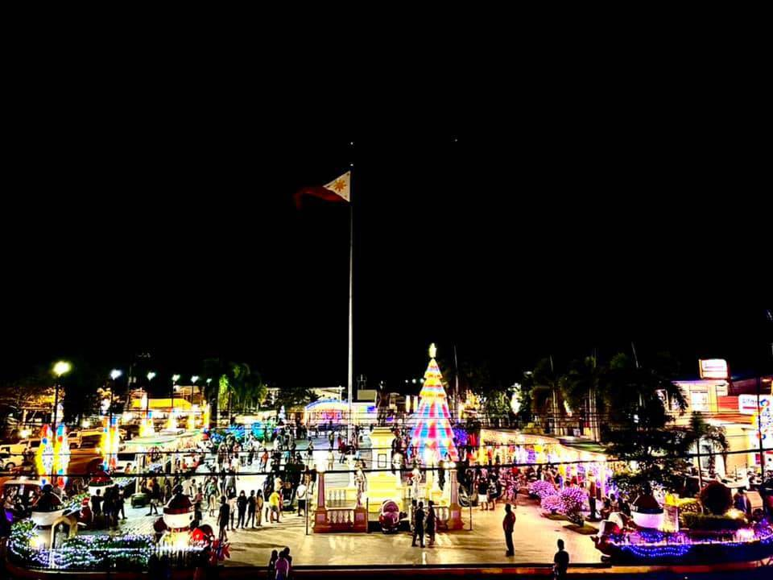

Welcome to Imus, a vibrant city in Cavite, Philippines, where rich cultural heritage intertwines with mouthwatering culinary delights. Immerse yourself in the heart of Filipino tradition and savor the flavors of local delicacies that reflect centuries of history and culinary craftsmanship.
Click to know more about each Cultures and Food Delicacies
Puto Bumbong
Made from glutinous rice that's been soaked, ground, and then steamed in bamboo tubes, Puto Bumbong boasts a distinct purple hue and a uniquely sticky texture. It's typically served with freshly grated coconut, butter, and a sprinkle of sugar or muscovado for a delightful burst of flavor.

Tamales Imus
Tamales Imus is a unique take on the traditional Filipino tamales. It features ground rice mixed with coconut milk, annatto, and various fillings such as chicken, pork, or salted eggs, wrapped in banana leaves and steamed until cooked.

Longganisang Imus
Longganisang Imus is a local version of Filipino sausage, known for its savory-sweet flavor and distinctive garlic seasoning. It is often served as a breakfast dish with fried rice and eggs or enjoyed as a snack on its own.

Pagoda Festival (Feast of Nuestra Señora del Pilar)
The Pagoda Festival is Imus City's most famous and grandest celebration held every second Sunday of May. It honors the city's patroness, Nuestra Señora del Pilar (Our Lady of the Pillar). The highlight of the festival is the grand procession of the patroness statue, which is carried on a beautifully decorated pagoda or barge along the Imus River. Devotees from different parts of Cavite and nearby provinces participate in this religious procession, offering prayers and thanksgiving.

Paskuhan sa Imus
Paskuhan sa Imus is a Christmas festival celebrated during the holiday season. It features colorful Christmas lights and decorations adorning the streets and public spaces of Imus City. The festival includes various activities such as Christmas bazaars, caroling, lantern-making contests, and Nativity displays, spreading the joy and spirit of Christmas throughout the community.